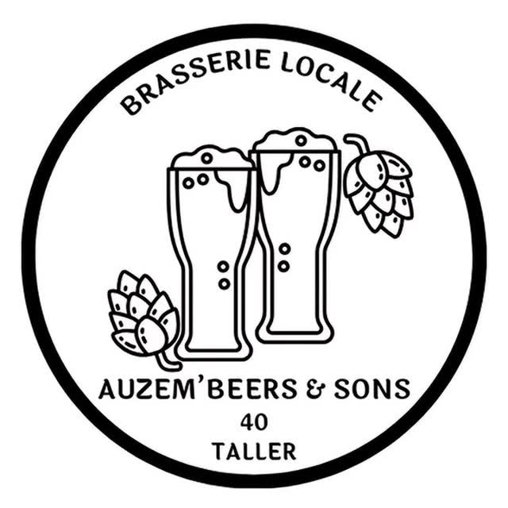
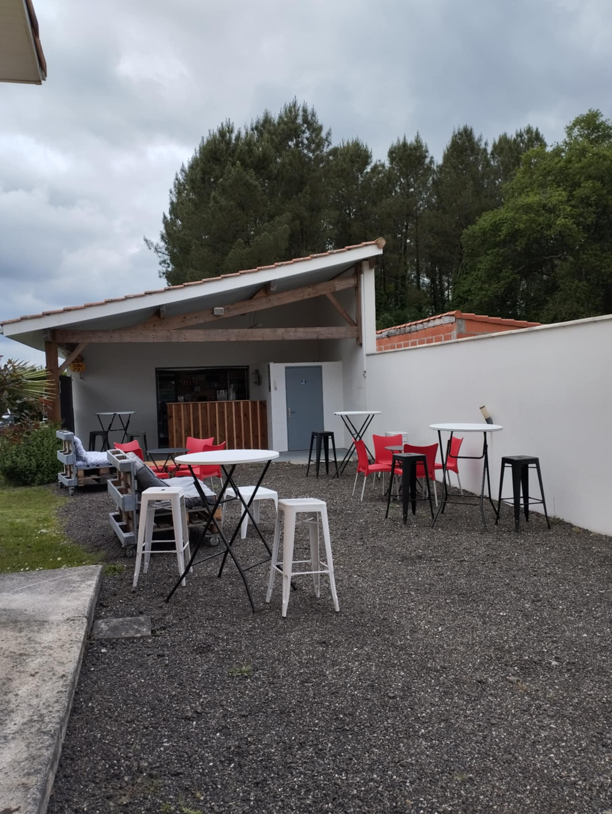
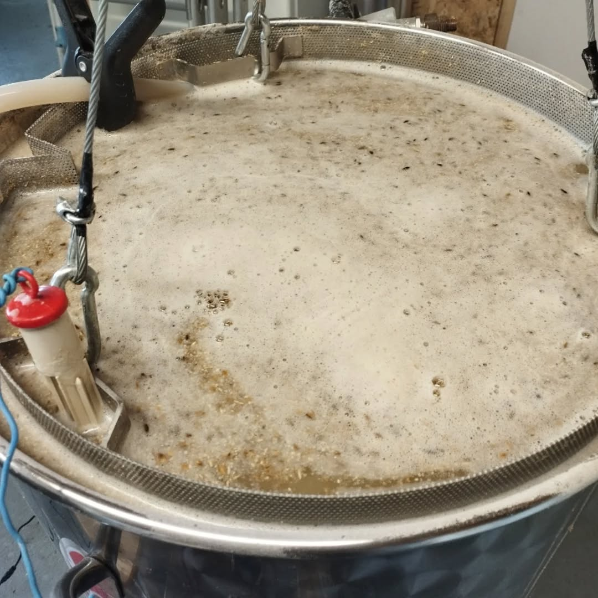

Auzem’Beers & Sons / Taller, 40260
Des bières de caractère.
Ici, dans les Landes.
Des bières artisanales, un brasseur et un coin des Landes. Faites comme chez vous.
Découvrir les bières ↗ Préparer une visite

TALLER, LANDES · L’ADRESSE DES BRASSINS

Derrière les brassins
Une brasserie.
Pas une usine.
À Taller, Éric Auzémery fait vivre Auzem’Beers & Sons. L’histoire commence dans une cuisine, avant de prendre place à la brasserie.
Basilic, piment d’Espelette, asperges, figues : ses créations explorent aussi des ingrédients inattendus.
Explorer la carte ↗Un aperçu de la brasserie
Bienvenue à Taller.
Auzem’Beers & Sons · Taller, Landes. Bar ouvert le premier vendredi du mois, de 18 h à 21 h. Préparer une visite ↗
On se retrouve ?